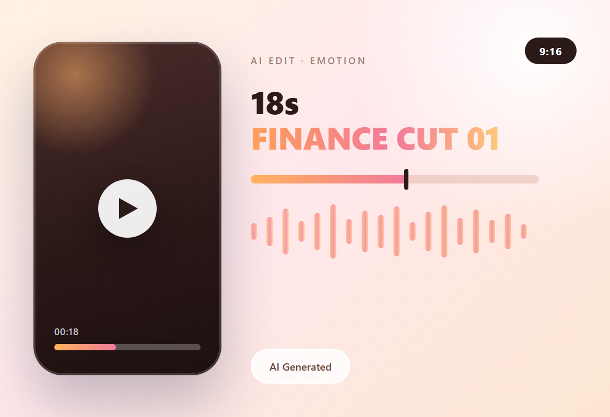

AI 剪辑 · 营销视频 · 金融类型 1
这条片子走情绪路线：先把「钱不够用」的窘迫演足，再把到账那一刻提前给出来。18 秒切成五段，成片就放在本页，可以直接播放。
主视觉

项目背景
18 秒 · 9:16 · 情绪先行
开场是一个人在桌前翻账单的样子：发薪日还没到，钱已经不够用了。这种处境不用解释，观众一眼就认得出来。
情绪向的片子不靠信息量取胜，靠的是「这就是我」的那一秒。先把窘迫演足，后面的产品才有出场的理由。
剪辑策略
先共情，再给结果
- 0–3 秒只给情绪不给产品：翻账单、皱眉、盯着手机，一句「Necesitas dinero」点明处境。
- 4–13 秒切到 App，三步每步只留一个动作：验证身份 → 填 CLABE → SPEI 到账，产品镜头都不超过 2 秒。
- 13–18 秒收在到账卡片上：金额加「Dinero depositado vía SPEI」，把情绪落到「钱已经到了」这一下。
制作流程
拆段 → 生成 → 粗剪 → 字幕
-
拆段落
按 0–3 / 3–6 / 6–10 / 10–13 / 13–18 秒切成五段，每段只讲一件事。
-
AI 生成
人物镜头和 App 界面分两批出，避免同一画面里脸和 UI 互相抢注意力。
-
粗剪
按段落对齐时长，产品镜头压到 2 秒以内，情绪镜头留够呼吸。
-
收尾
统一暖色调色、西语字幕压在画面下方，导出 720 × 1280 MP4。
成片
720 × 1280 · 18 秒